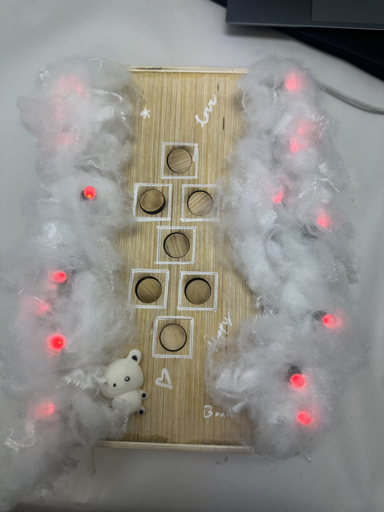
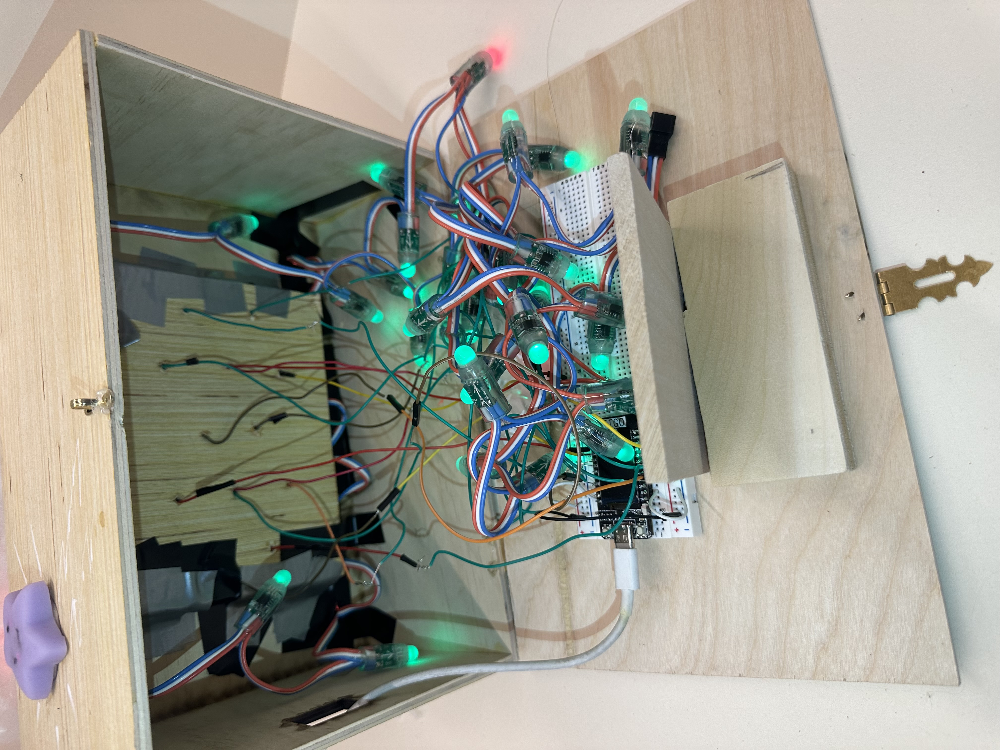
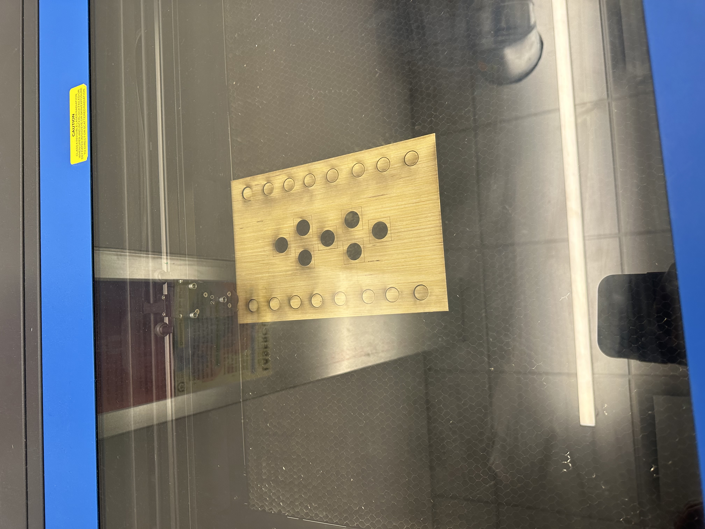
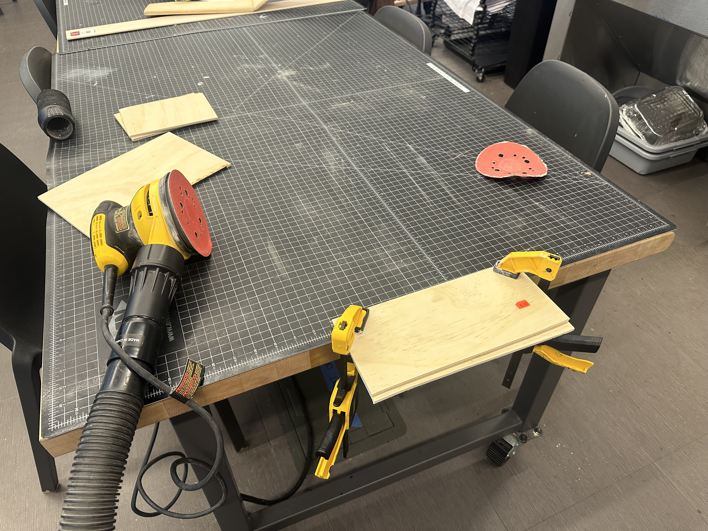

For the final project, we created a miniature hop-scotch that could be played with just the user's fingers. As the user moves through the hop-scotch arena the corresponding lights on the side illuminate. If the user successfully moves through the hop-scotch arena in the correct order then the lights will illuminate in a satisfying pattern to celebrate the user.
Initially, we wanted to make full-scale electronic hopscotch that would light up LED’s when stepping on the respective squares. After talking with professor Santolucito and realizing that this project would be out of the scope of the final project, we decided to make a hopscotch for fingers, inspired by toys like TECH DECKS.
For this project we used the following Materials: ESP 32, USB-to-USB-C cable, 7 miniature push buttons, wires, Breadboard, ⅛ inch Plywood, metal hinges, neopixel lights, white wood pen. We additionally used the following tools: laser cutter, soldering iron, saw, wire stripper, sander, electric screwdriver.
First, let us wire up the breadboard. Place the ESP32 on the breadboard, making sure that each of the pins are available for use. Connect a wire from the ground to one of the vertical strips, and the 3V power supply to the other. Take each push-button and solder male-to-male wires to two of the pins diagonal to each other. Plug one wire into the vertical strip connecting to ground, and the other to one of the relevant pins detailed in the code in the variable “btns[]”. Next, connect the power and ground of your neopixel lights’ input into the power and ground strips on the breadboard. Then, connect the wire controlling the lights to pin 12. Now, connect your computer to the ESP32 using your usb-c wire and upload hopscotch.ino. If all the previous steps were followed correctly, then all of the wires should be illuminated green or red, and when a button is pressed some of the lights should turn blue.
 To create the enclosure, take a piece of plywood and create a simple box. We used a laser cutter to create the box, but more conventional tools should also be able to create the box. Before assembling the box however, you need to cut, preferably with a laser cutter, the top board. Cut out seven holes in a hopscotch arrangement. Save the leftover circles of wood that will be produced this way. Additionally cut out holes the size of your neopixel lights around the perimeter of the box. Now construct the box, leaving the bottom disconnected. Connect the bottom of the box to the rest of the box using hinges, so you can easily access the electronics inside. Secure the breadboard to the bottom of the box. Place a taut mesh, electrical tape, or tough paper on the inside of the box, covering the holes from the inside. Wire up the breadboard as previously discussed. Poke holes in your material and thread your buttons and lights through the holes. Glue the leftover wood circles onto your buttons giving them greater surface area to press. Decorate, plug in your ESP32, and enjoy your hopscotch!